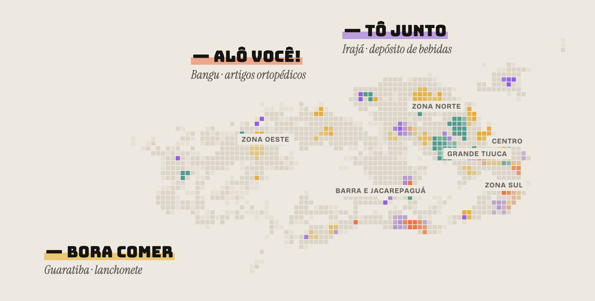
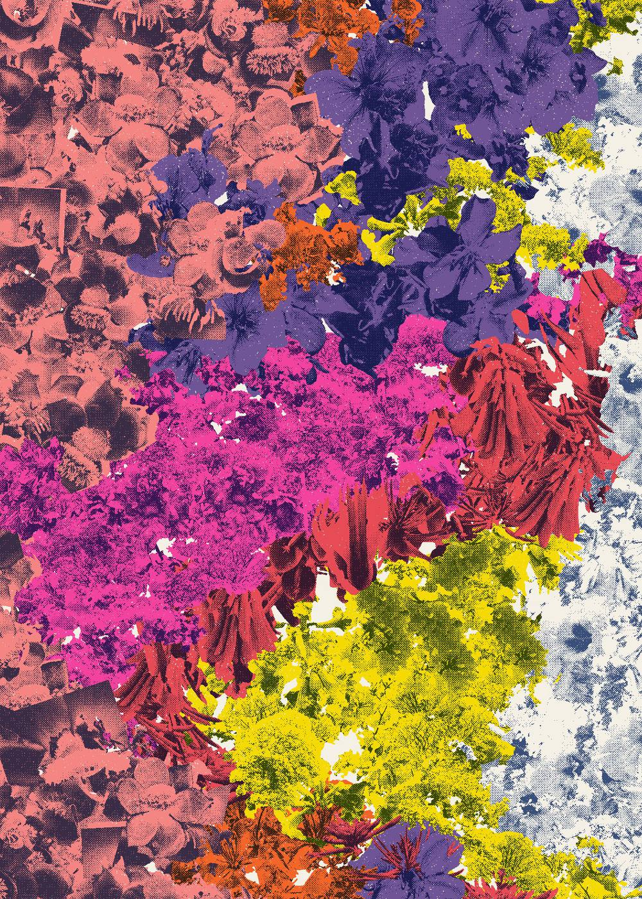
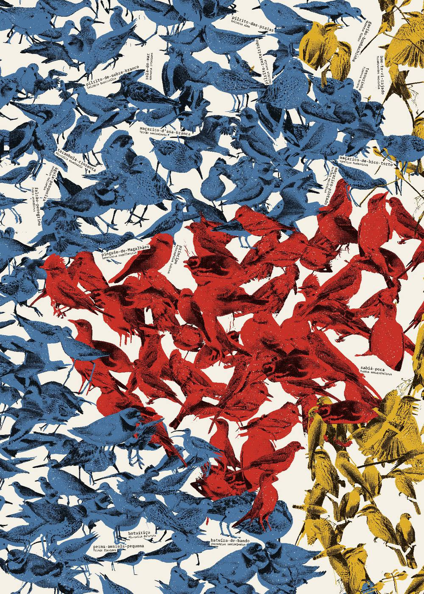

Maps and posters about how Rio lives, built from open data.

An atlas of Rio de Janeiro mapping ~52k street businesses by the kind of name they use (diminutives, family ties, English words) and where each kind clusters in the city.

Which trees bloom in Rio, week by week across the year, from 20 years of iNaturalist records. Each color is a tree, collaged from photos of its own flowers.

The 19 most-recorded migratory birds in Rio through the year: blue for those escaping the northern winter, red for the southern winter, yellow for those that come to nest.